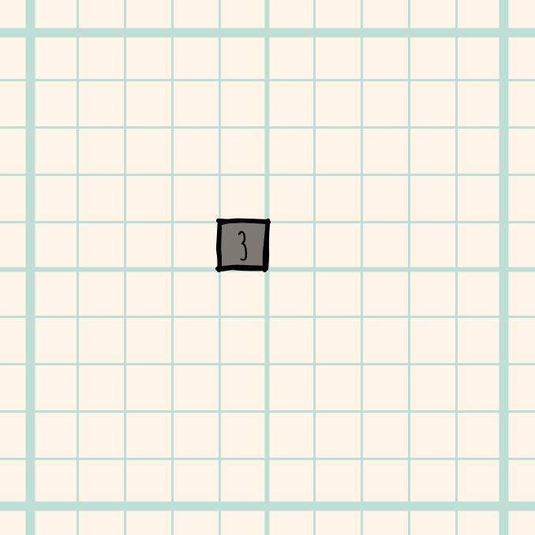
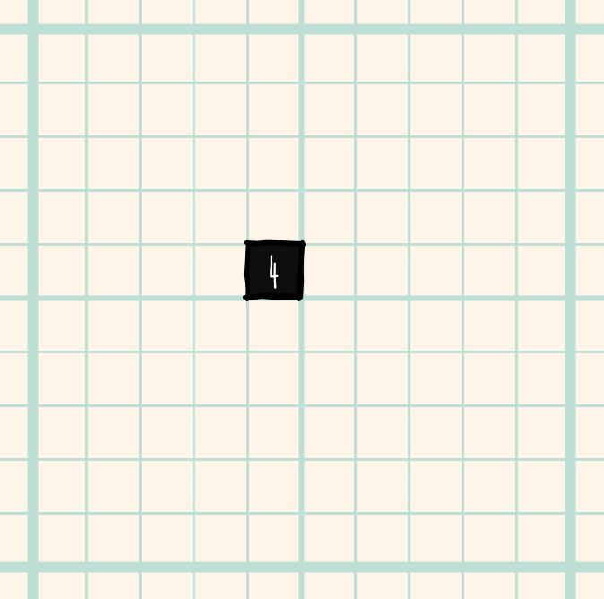
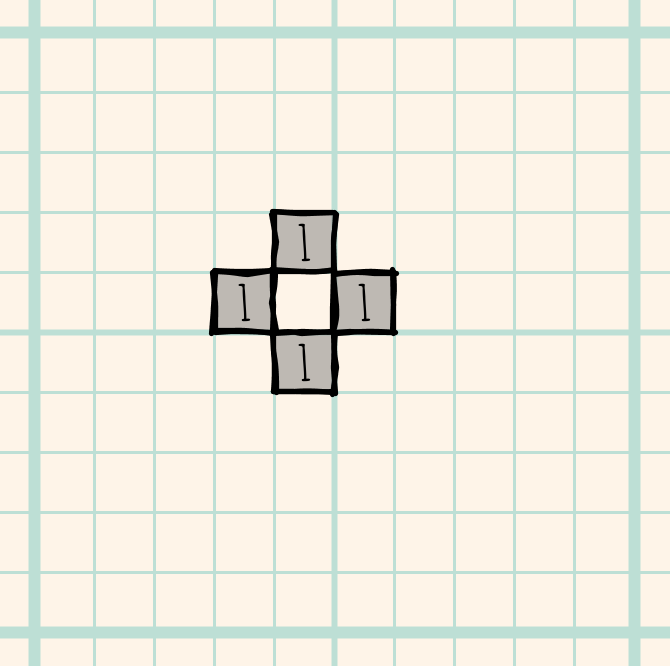
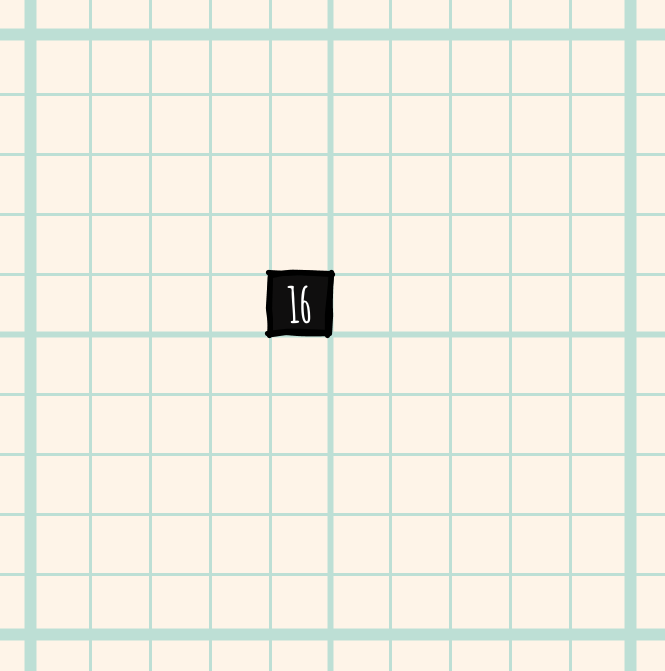
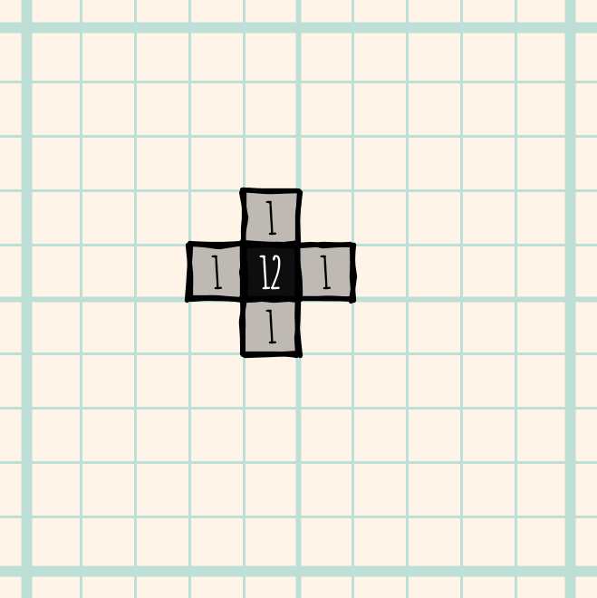
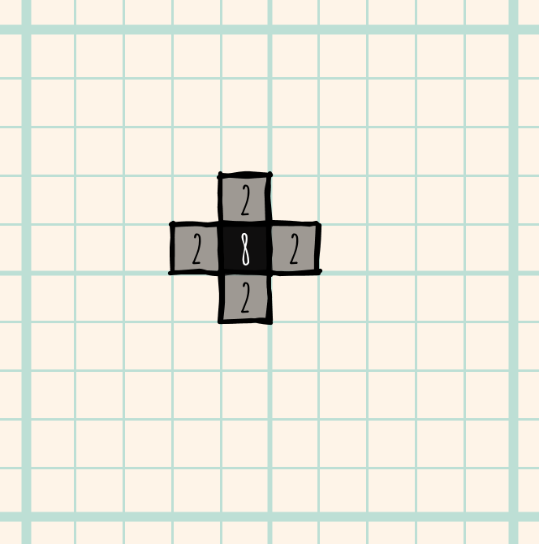
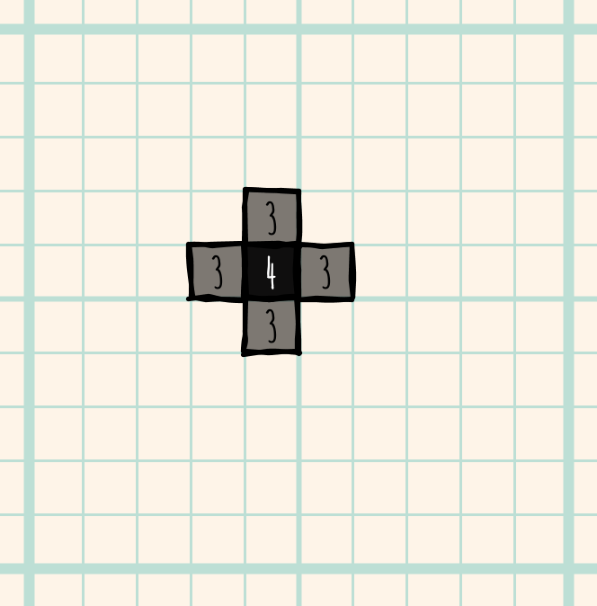
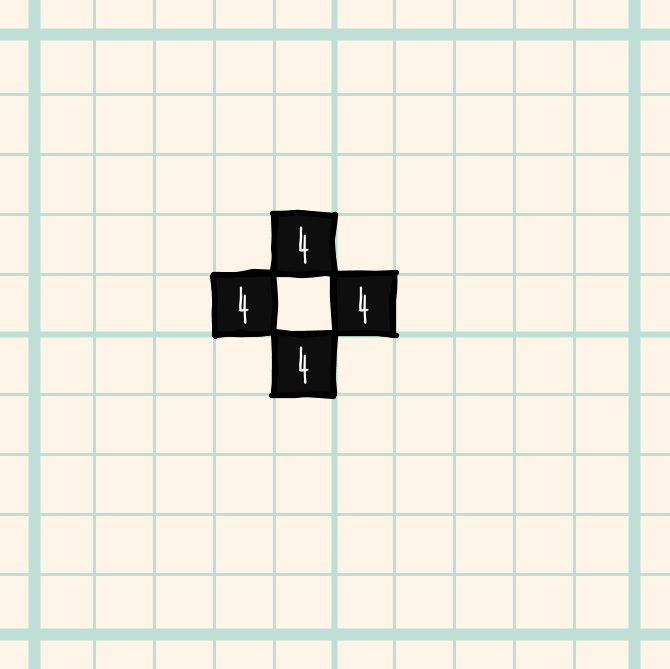
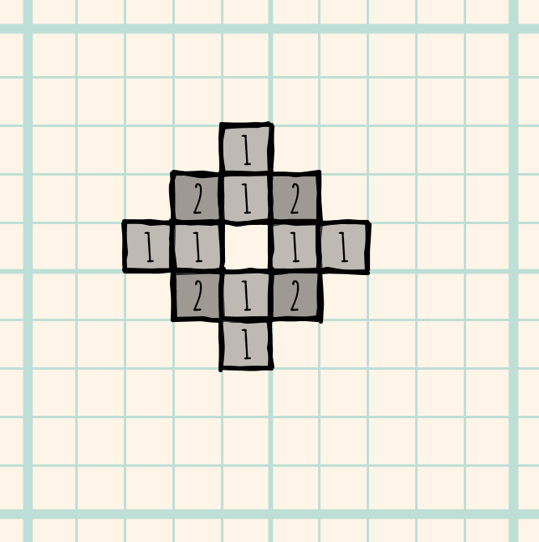
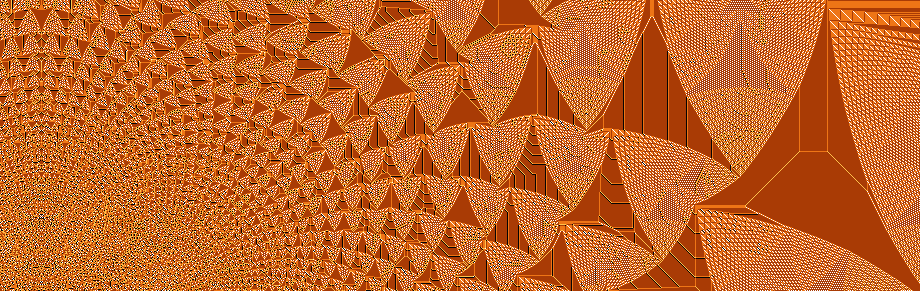

This project involves modelling piles of sand and visualizing the results by colouring each pile according to how high it is (i.e. how many grains of sand are stacked on top of each other). What makes this an interesting project is that a very simple model of sand pile behaviour, which is easily codeable in Processing, can produce infinitely complex and beautiful patterns.
A Simple Sandpile model
Imagine a flat plane onto which we can drop one or more grains of sand. To keep things simple we can divide
that plane into a grid of cells just like the coordinate system used in Processing. Below we symbolise a
sandpile with 3 grains of sand all balanced on top of each other in a single grid cell.

If we were to drop another grain onto the same cell we could imagine the pile collapsing and the 4 grains spread to adjacent cells:
|  |  |
We now have the basis for a simple set of rules governing the stability of a sandpile:
For each cell in the grid: If a grid cell contains 3 or fewer sand grains, the cell is stable. Else, remove 4 sand grains from the cell and add one grain to each of the 4 adjacent cells. Repeat until all cells are stable.
This is what happens when you start with a single (unstable) cell containing 16 sand grains:
|  |  |  |  |
|  |  |
 |
In the examples above, the pattern looks quite predictable, but if you start with many more grains in a single cell, some interesting and surprising patterns develop. For more details, see The Amazing Autotuning Sandpile.

Project ideas
For your project you could code this simple sandpile model in Processing. The grid cells can be represented in a 2d array and you can create a method that processes the array following the sandpile rules above. To visualize the sandpile you can draw a series of rectangles, one for each grid cell, setting the colour of the rectangle according to the number of sand grains (which will be one of 0, 1, 2 or 3 if the sandpile is stable).
- What happens if you start with 100 grains in a single cell? What about 1,000 or 10,000 or 100,000?
- The model above assumes that a cell becomes unstable with 4 or more grains. What happens if you set that value to a higher number?
- Can you get Processing to animate the development of the sandpile as the grains start spreading?